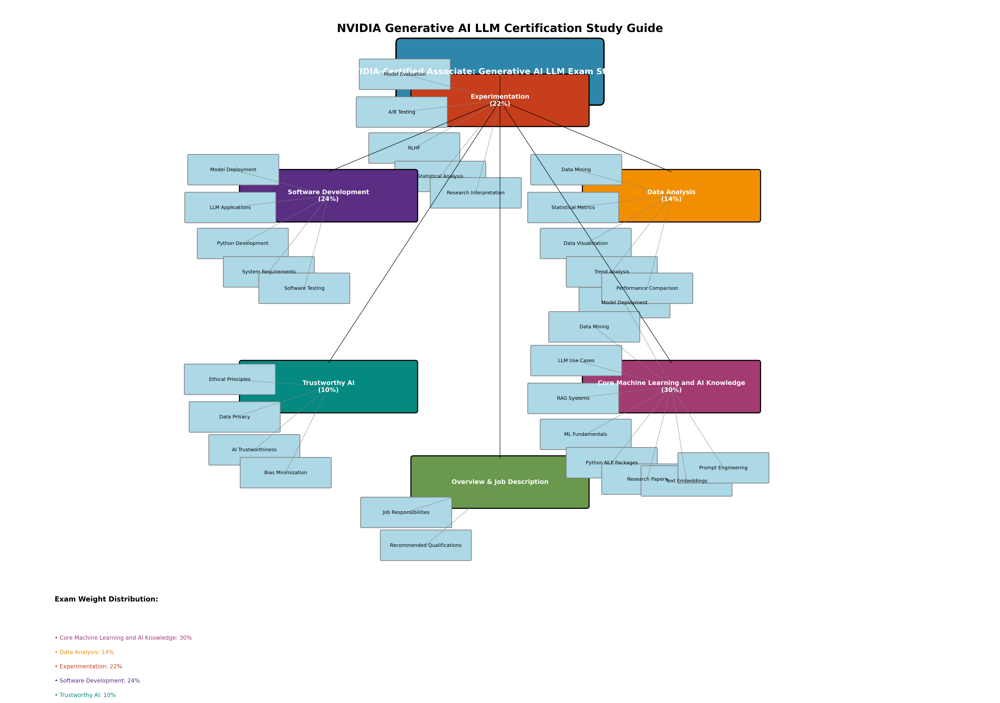

Study Guide Visual Overview
The following mindmap provides a hierarchical breakdown of all certification sections and key topics:
Overview and Job Description
The generative AI-large language model (LLM) associate developer contributes to development, programming, and quality assurance of state-of-the-art generative AI LLM systems. They work with AI professionals to develop datasets, select and train models, implement testing and debugging processes, and understand model deployment for applications.
Job Responsibilities
- Collaborate with AI development team to design, code, test, debug, and document programming applications
- Perform system analysis to ensure software and systems meet required specifications
- Aid in integrating new AI language models into existing systems or creating new ones
- Assist in assessment and resolution of application and system performance issues
- Stay updated on new AI models and developments related to language learning models
- Contribute to production of technical documents and manuals
- Conduct software programming and documentation development under senior staff direction
- Perform prompt engineering
- Select models
- Define, curate, label, and annotate LLM datasets
- Perform experimentation like A/B testing, evaluating prompts, evaluating models, and producing POCs
Recommended Qualifications
- Bachelor's degree in computer science, software engineering, AI, or related field
- Knowledge of Python, C, and AI frameworks (PyTorch, TensorFlow, etc.)
- Solid understanding of neural networks and deep learning models
Core Machine Learning and AI Knowledge30%
Knowledge of algorithms, conventions, and techniques that allow computers to learn from and make predictions or decisions based on data.
Key Topics
Assist in deployment and evaluation of model scalability, performance, and reliability
Process of extracting insights from large datasets using data mining, data visualization
Build LLM use cases such as retrieval-augmented generation (RAG), chatbots, and summarizers
Curate and embed content datasets for RAGs
Fundamentals of machine learning (feature engineering, model comparison, cross validation)
Python natural language packages (spaCy, NumPy, vector databases, etc.)
Read research papers to identify emerging LLM trends and technologies
Select and use models to create text embeddings
Use prompt engineering principles to create prompts to achieve desired results
Use Python packages (spaCy, NumPy, Keras, etc.) for traditional machine learning analyses
NVIDIA Courses
- Fundamentals of Deep Learning, Getting Started With Deep Learning
- Introduction to Transformer-Based Natural Language Processing
- Building Transformer-Based Natural Language Processing Applications
- Fundamentals of Accelerated Data Science
- Building LLM Applications With Prompt Engineering
- Rapid Application Development With Large Language Models (LLMs)
Suggested Readings
- Attention Is All You Need
- Autoregressive Model
- End-to-End AI for NVIDIA-Based PCs: Transitioning AI Models With ONNX
- What Are Foundation Models?, NVIDIA Blog
- LoRA: Low-Rank Adaptation of Large Language Models
- Generative AI—What Is It and How Does it Work?
- Activation Function
- Implementing Deep Learning Methods and Feature Engineering for Text Data
- Generative AI Research Spotlight: Demystifying Diffusion-Based Models
- Training Hidden Units With Back Propagation
Data Analysis14%
Inspecting, cleansing, transforming, and modeling data with the goal of discovering useful information, informing conclusions, and supporting decision-making.
Key Topics
Process of extracting insights from large datasets using data mining, data visualization
Compare models using statistical performance metrics, such as loss functions or proportion of explained variance
Conduct data analysis under supervision of senior team member
Create graphs, charts, or other visualizations to convey results of data analysis
Identify relationships and trends or factors that could affect research results
NVIDIA Courses
- Fundamentals of Deep Learning, Getting Started With Deep Learning
- Introduction to Transformer-Based Natural Language Processing
- Building Transformer-Based Natural Language Processing Applications
- Building LLM Applications With Prompt Engineering
- Rapid Application Development With Large Language Models (LLMs)
- Fundamentals of Accelerated Data Science
Suggested Readings
- RAPIDS
- cuML 24.04.00 documentation
- GPU Accelerated Data Science With RAPIDS
- Data Exploration
- Stemming and Lemmatizing With sklearn Vectorizers
Experimentation22%
The study of how to perform, evaluate, and interpret experiments, including AI model evaluation and the use of human subjects in labeling or reinforcement learning from human feedback (RLHF).
Key Topics
Process of extracting insights from large datasets using data mining, data visualization
Compare models using statistical performance metrics, such as loss functions or proportion of explained variance
Conduct data analysis under supervision of senior team member
Create graphs, charts, or other visualizations to convey results of data analysis
Identify relationships and trends or factors that could affect research results
NVIDIA Courses
- Fundamentals of Deep Learning, Getting Started With Deep Learning
- Introduction to Transformer-Based Natural Language Processing
- Building Transformer-Based Natural Language Processing Applications
- Fundamentals of Accelerated Data Science
- Rapid Application Development With Large Language Models (LLMs)
- Building LLM Applications With Prompt Engineering
Suggested Readings
- How to Conduct A/B Testing in Machine Learning?
- Inference Optimization
- Zero-Shot Testing
- Speech and Language Processing
- Machine Translation methods
- Hallucinations in Large Language Models
- General Language Understanding Evaluation
- Evaluating RAG Applications
- Cross-Validation in Machine Learning
- Benchmarking Elementary Language Tasks
- Building Transformer-Based Natural Language Processing Applications
Software Development24%
Create, maintain, and test software.
Key Topics
Assist in deployment and evaluations of model scalability, performance, and reliability
Build LLM use cases such as RAGs, chatbots, and summarizers
Familiarity with capabilities of Python natural language packages (spaCy, NumPy, vector databases, etc.)
Identify system data, hardware, or software components required to meet user needs
Monitor functioning of data collection, experiments, and other software processes
Use Python packages (spaCy, NumPy, Keras, etc.) to implement specific traditional machine learning analyses
Write software components or scripts under supervision of senior team member
NVIDIA Courses
- Fundamentals of Deep Learning, Getting Started With Deep Learning
- Introduction to Transformer-Based Natural Language Processing
- Building Transformer-Based Natural Language Processing Applications
- Fundamentals of Accelerated Data Science
- Rapid Application Development With Large Language Models (LLMs)
- Building LLM Applications With Prompt Engineering
Suggested Readings
- TensorRT—Get Started, NVIDIA Developer
- Best Practices—NVIDIA NeMo
- Mastering LLM Techniques: Customization, NVIDIA Technical Blog
- Achieving FP32 Accuracy for INT8 Inference Using Quantization-Aware Training With NVIDIA TensorRT
- NCCL: Accelerated Multi-GPU Collective Communications
- Technologies Behind Distributed Deep Learning: AllReduce, Preferred Networks Research & Development
- Visual Intuition on Ring—Allreduce for Distributed Deep Learning, by Edir Garcia Lazo, Towards Data Science
- Big Data? Datasets to the Rescue!, Hugging Face NLP Course
- Deep Learning Scaling Is Predictable, Empirically
- BERT: Pretraining of Deep Bidirectional Transformers for Language Understanding
Trustworthy AI10%
Creation and assessment of ethical, energy-conscious, and reliable artificial intelligence systems capable of interpreting and integrating various forms of data, ensuring that they're designed and applied in a manner that's transparent, fair, and verifiable.
Key Topics
Describe the ethical principles of trustworthy AI
Describe the balance between data privacy and the importance of data consent
Describe how to use NVIDIA and other technologies to improve AI trustworthiness
Describe how to minimize bias in AI systems
NVIDIA Courses
- Rapid Application Development With Large Language Models (LLMs)
Suggested Readings
- Trustworthy AI for A Better World, NVIDIA
- What Is Trustworthy AI?, NVIDIA Blog
- What Is Retrieval-Augmented Generation aka RAG?, NVIDIA Blogs